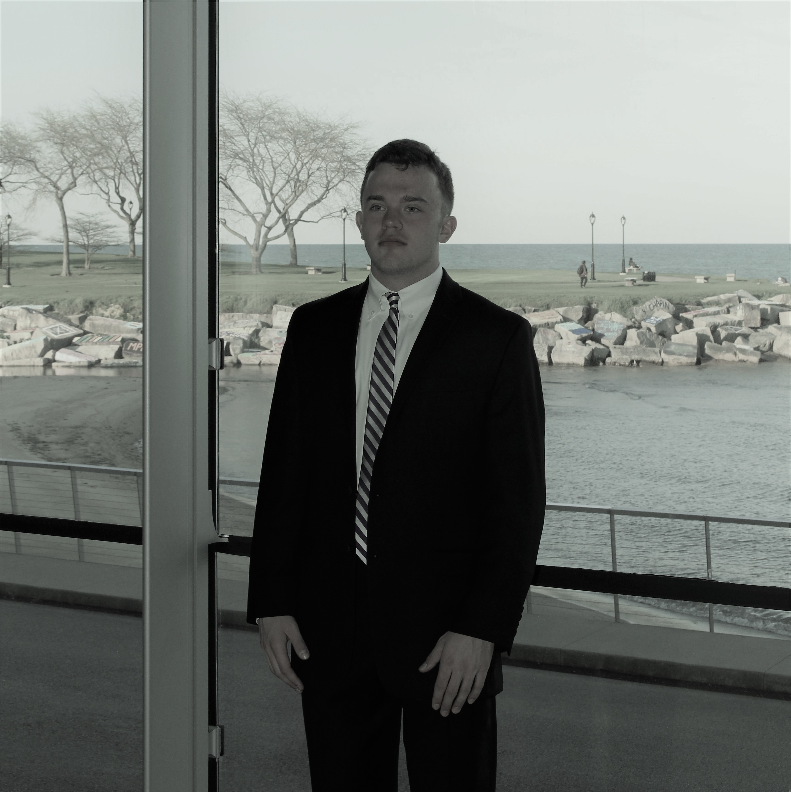
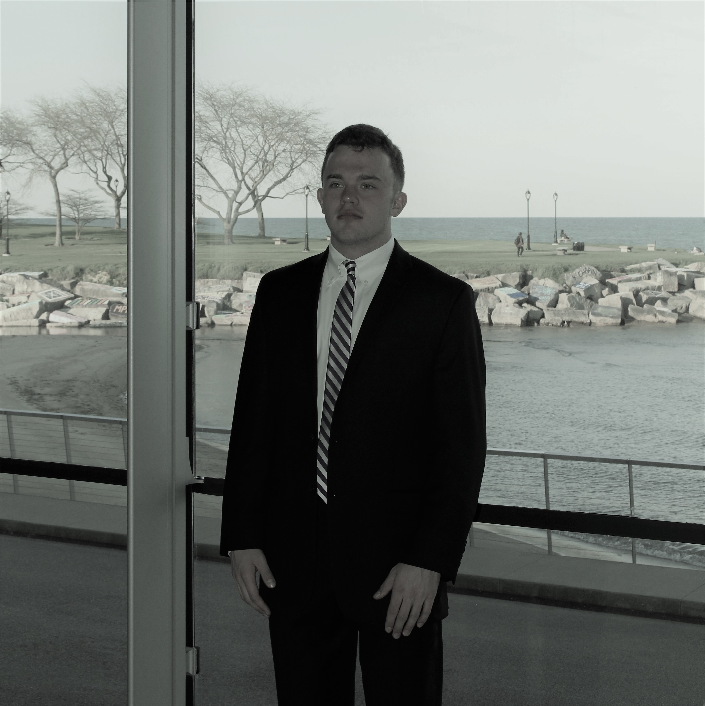

All That Jazz
Avriana Allen | 5.31.2018
Although the Northwestern Jazz Studies Program's winter concert received a lot of publicity, and ultimately sold out, most of their concerts are nowhere near packed. Why is this and what are we missing?
Originally published on North By Northwestern here.

Name: Joesph Miller
Year: Freshman
Instrument: Saxaphone
Name: Jacob Galdes
Year: Freshman
Instrument: Guitar
Name: Austin Klewan
Year: Freshman
Instrument: Saxaphone

Name: Oliver Holden-Moses
Year: Freshman
Instrument: Drums

Name: Spenser Hyun
Year: Freshman
Instrument: Piano

Name: Jon Rosen
Year: Freshman
Instrument: Saxaphone

Name: George Estey
Year: Sophmore
Instrument: Bass

Name: Patrick Ryan
Year: Sophmore
Instrument: Trumpet

Name: Caleb Eckstein
Year: Sophmore
Instrument: Trombone

Name: Tyler Santee
Year: Sophmore
Instrument: Drums

Name: Louis Danowsky
Year : Junior
Instrument: Saxaphone

Name: Sam Wolsk
Year: Junior
Instrument: Trumpet

Name: Emma Blau
Year: Junior
Instrument: Trombone
Name: Tom Levy
Year:Senior
Instrument: Trumpet

Name: Jared Decker
Year: Senior
Instrument: Drums
 
